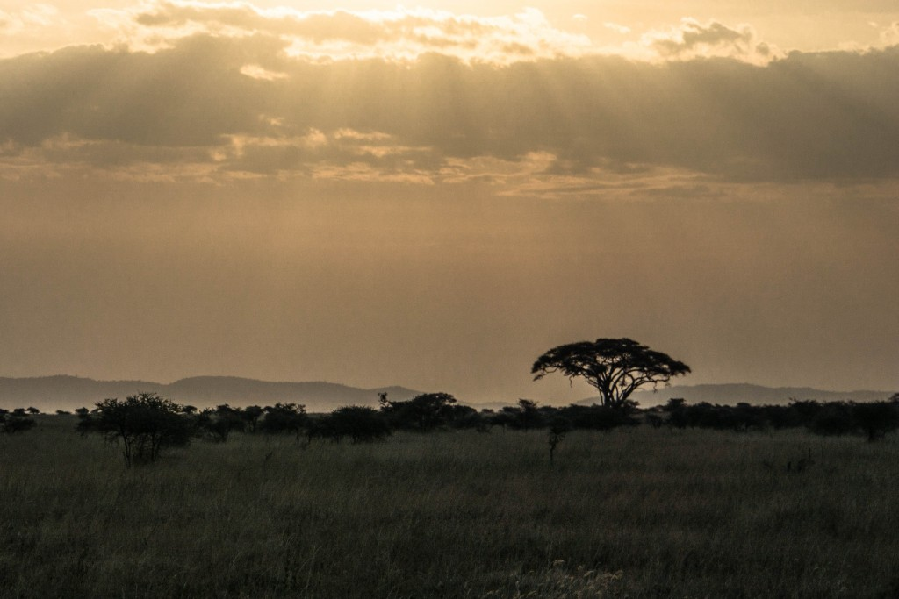

Safari had never been on the top of my bucket list.
I’d hoped to do it one day, but I kept finding excuses: it costs too much, my camer lens is not good enough, I’d prefer to see mountain gorillas more than the Big Five.
But then it happened: I was flying to Tanzania to go on a safari in the peak of the tourist season (and I hate crowds)
My camera was alright, nothing special but I managed (still I felt jealous seeing other tourists with good telephoto lenses). Observing the animals in their natural environment was much more fascinating than I’d imagined and all in all the safari experience proved to be one of the best travel experiences I’ve had – definitely worth every dollar spent!
There are many national parks in Tanzania where you can observe animals, it all depends on the time and money you have. The best known are Serengeti and Ngorongoro Crater and we opted for them wondering if they would live up to their fame.
Itinerary
We discussed the itinerary pior to our arrival in Tanzania. We emailed Anton, the guide recommended to us by our friends and this is why we had everything organised for us by Lights on Africa Destinations Company:
Day 1: leaving Arusha in the morning – arriving in Serengeti in the afternoon
Day 2: Serengeti
Day 3: Serengeti and arriving at Ngorongoro campsite
Day4: Ngorongoro crater and coming back to Arusha
The permits are valid for 24 hours, so as we entered Serengeti at around 3pm we had to leave the park by this time on the third day – this was also the time we entered Ngorongoro Conservation Area and we had to leave it after 24 hours.
Don’t expect too much
Don’t set your expectations high and you won’t be disappointed. You’ve probably seen numerous films about safaris, but bear in mind they were shot by professionals who showed the best captured moments – these are wild animals you’re going to see, they aren’t waiting for you to welcome you to their word.
This is what we kept repeating before we set off.
Day 1
We arrived in Serengeti in the afternoon – only a few hours left before the sun would set. Not much time so we were excited at the sight of every animal we passed, even if they were the lone ones (and there were many like that).


In distance we saw a few cars circling the rocks so we approached to check out what was going on.
Cheetahs!
It was the first moment of pure joy: unbelievable, what I’ve watched in films so far I could see with my own eyes!
One cheetah, the second, the thirds… they were not paying the slightest attention to us!
I’ve been to the zoos many times, but watching it on the African savannah proved to be a totally new experience and I couldn’t take my eyes off, I couldn’t decide if I should take photos or just observe them.
We would have probably looked at them much longer but suddenly one stood up, turned its head right and stared in the distance. The others followed the suit.
We stared right as well. First we saw nothing but then as they jumped off we noticed a gazelle!


Gazelle! They are chasing a gazelle! We started the car and followed as the cheetah run almost hidden in high dry grass. It was almost like watching an important football match when you anxious about the result.
“Will they catch it?” we wondered.
They didn’t. It escaped and we were truly disappointed.
I didn’t have much time to cool off after the cheetahs experience when our road was crossed by the heard of elephants!

They seemed not to notice us, just walked slowly past the cars as if they were some more trees on their way.


“I didn’t like it much,” said a friend bumped into in the street just a few days before we left, “It was like this poor lion and a bunch of jeeps circling it”.
That is what I was afraid of. Chasing the animals, taking pictures with other cars in the background, jeeps outnumbering animals…
Well, sometimes there were gathering of a few cars looking at animals but it didn’t happen often and it was not as bad as some people describe. No circling animals because off-road is not allowed in Tanzanian parks, if there was something interesting the cars would just line up along the road.
Whether you see an animal close up depends solely on the animal – if it comes closer you’ll see it, if it doesn’t binoclulars is a must!
After cheetahs and elephants the time has come for LIONS!
The first lion was simply lying on the rocks turning its head right and left, ignoring us, just like the others.


The beginning was much better than we could have imagined! Unbelievable, amazing, fascinating, breathtaking… just like in all those National Geographic films! Or even better!
We were driving along, turning left or right, with the roof up we were standing up admiring the surroundings: the first heards of gazellas quikly running in high grass, guinea fowls (lovely!), monkeys jumping in the trees, a dik-dik – the smallest antelope – hiding somewhere in the bushes.
“Why don’t you like the dik-dik,” Elwira was utterly surprised, “Don’t you think they are cute?”
Well, the dik-dik look nice, but to admire it like that?


As the sun was coming down we were heading towards our first come when suddenly we saw a couple of jeeps with all the passengers inside looking to the right.
We stopped and looked right. Nothing. Yet, they saw something. What?
” Leopard,” said Anton, our guide and driver.
“Where?”
“In the tree.”
“Where????”
“There, on the right. You can see the tail hanging down.”
Yeah, true, we saw the tail hanging down but to see the leopard without binoculars was next to impossible.
Look bellow: a close-up of the leopard and the tree as we see it in the distance. Would you notice it from the road far away? I would have never noticed it if our guide hadn’t pointed it.


The first sunset over the beautiful savannah and the day was over. The first amazing day of our safari experience.

Day 2.
They are a few ways of doing the safari. You can get up at the crack of down or you can sleep in. There are people who come back to the camp for lunch or those you spend the whole day in the car.
We woke up early anxious for the adventure to come and set off heading towards the border with Kenya which meant a long day driving.
Six o’clock breakfast – that was the start of the day.
Serengeti is derived from Maasai language and means endless plains and on our second day we found out what a perfect name it is!
We drove past the animals snapping hundreds photos of them, and although Anton told us there was more to see soon we didn’t quite believe him.


As we kept driving the landscape changed from tall dry grass to bushes and then greener hilly areas. The drive was long, the animals scarce, hardly any cars. I would have felt asleep but the jeep was shaking on the bumpy road and I couldn’t.
Suddenly we saw dazzles of zebras. There were like hundreds of them, their stripes mixing together in our eyes. Aren’t they beauties?


A crocodile, dik-diks, buffaloes, various antelopes, lions (more about lions in Simba – the Lion King), vultures picking on their lunch, a skeleton left by the roadside… new things kept popping up in front of our eyes all the time.


And then we almost reached the Kenyan border with the zebras and wildebeests around.
Do you know that during the Great Migration zebras are the leaders who know where to go?

When we looked far at the horizon we saw small moving dots – so many animals!


We stopped to see some different animals drinking water, marching, running, jumping, lying, just doing nothing. It felt as watching the film where suddenly you are transferred from your sofa into your TV set.

Zebras are my favourite animals so whenever we saw zebras we had to stop.
Zebras crossing the road? Stop!
Zebraz drinking water! Wait!
So many zebras, so many photos!

My companions also had their favourites. Eliza was in love with giraffes, Elwira loved leopards, and Justa… well Justa admired all the animals we saw.
I don’t think giraffes are as cute as zebras with their black and white striped bottocks but when you look at those long necks or into they eyes with long lashes… well, you need to admit: they don’t look bad either!


Hippos were so funny with their barrel-shaped bodies and short stubby legs, but as the smell was almost unbearable. It felt like being in a never cleaned toiled so we snapped a few photos of them lying in the water (they looked like stones!) and I tried to catch them with open mouths before we left. –


That was a very long day as we spent almost 12 hours in our jeep. Surprisingly, I was not tired at all. Too much was happening around to get bored or tired, too much excitement!
When we returned to our campsite we saw an elephant walking among our tents – what a view!


Day 3.
We knew we would have to get up early, so we asked, “Six o’clock breakfast?”
“No, 5.40.” answered Anton and we knew it was not a joke. No sleeping-in on the safari!
No complaing either – we were happy to see the sunrise outside the camp.
It was greyish at first – dark on one side, light on the other, it didn’t really look special, but then the sun went up and it was beautiful!


We set of in search of cheetahs, but it turned out to be the lions’ day. There were also hyenas, vultures, elephants, monkeys, hundreds of antelopes (the names of which I could not remember). Lots, lots of animals but no cheetah.


We stopped a few times at some other cars asking about cheetahs, but nobody saw anything. One driver said they hadn’t seen any for the last four days.
Well, this is what it’s like in the park – the animals aren’t waiting for you, you might see them, our you might not, it’s a good luck, or bad luck.
It was almost noon so we headed back to the campsite to eat lunch and pack.
Not many animals at noon, as if suddenly they’ve disappeared. Somewhere in that almost empty space Anton stopped the car and pointing to the far away tree, said, “A cheetah, over there, hiding in the grass.”
Yes! There it was! We’ve found it!
It was looking left at a gazelle. The gazelle was still.
Can you see the gazelle on the left?
Can you see the cheetah on the right next to the tree? No. No surprise there. He can’t have been hungry because he looked around for a moment and simply lied down and we didn’t see it any more. Not even enought time to snap a picture.
As we left Serengeti we drove past a few Maasai villages before we reached the campsite at the Ngorongoro crater.
But that’s a story for the second part of Safari in Tanzania!


{kind=link}
{kind=link}
{kind=link}
{kind=link}
{kind=link}
{kind=link}
{kind=link}
{kind=link}